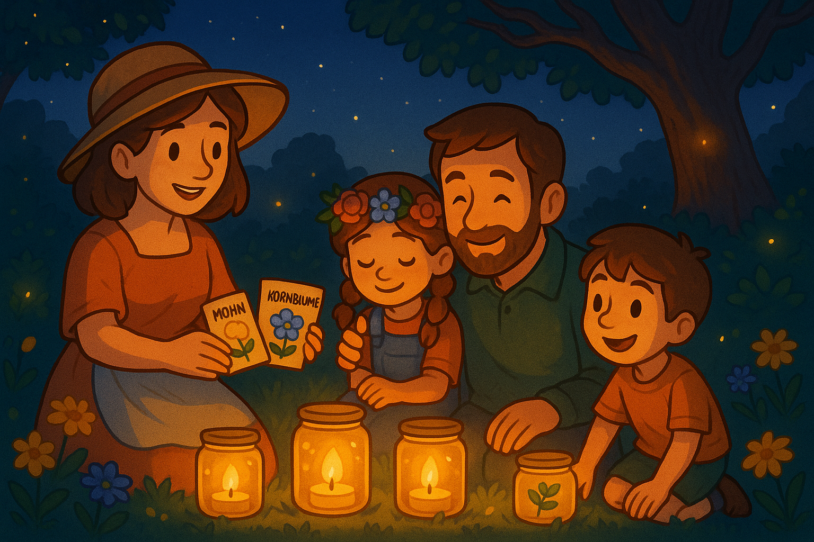

Ein sanfter Frühlingswind weht durch den Familiengarten, als Papa die letzten bunten Wimpel zwischen den Apfelbäumen befestigt. Heute ist nicht irgendein Tag – heute findet das große Blumenfest statt, bei dem jedes Familienmitglied eine eigene Blütenkreation beisteuert. Auf dem Rasen liegen Karomuster-Decken, Tische sind mit Spitzenstoffen drapiert und auf jedem Teller funkeln Zuckerblüten.
Mama stellt eine riesige Schüssel mit selbstgemachter Zitronenmelisse-Limonade auf und verteilt handgemachte Blütenkekse auf silbernen Tabletts. Die Kinder Lea und Tim bauen am Gartenzaun einen „Blumenwald“ auf: Schilder mit Gedichten, die zwischen Margeriten und Vergissmeinnicht stecken. Jeder Vers handelt von Sonne, Duft und Bienenmelodien.
Langsam treffen die Gäste ein: Tante Eva trägt einen Hut, der zu einem einzigen großen Sonnenblumenmeer geworden ist, Onkel Peter balanciert eine Schale mit Wildkräutersalat, und Oma kommt mit einer handgeschnitzten Harfe, bereit, das Fest musikalisch zu begleiten. Die Nachbarn aus der Straße folgen mit selbstgezogenen Topfpflanzen – Glyzinien, Dahlien, Glockenblumen. Sogar Herr Schmidt, der normalerweise verschlossen ist, schiebt seine Sonnenbrille zur Stirn und nickt anerkennend.
Pünktlich um elf beginnt das Programm: Zuerst präsentiert Lea ihre „Blütenlaternen“ – hohle Kürbisse mit Teelichtern und Blumenmustern. Im Dämmerlicht glitzern sie wie kleine Lampions. Dann erklärt Tim das Blumen-Quiz: Wer die meisten Bienenarten erkennt, gewinnt einen Honigtopf. Heiteres Summen erklingt, als die Kinder eifrig Blätter und Blüten untersuchen, während Papa als Quizmaster lacht und applaudiert.
Nach dem Quiz folgt der „Tanz der Kronen“: Jedes Kind legt eine Krone aus frischen Rosen und Kornblumen auf – und alle Paare tanzen um den Apfelbaum, bis ein sanfter Glockenschlag die Runde beendet. Oma stimmt ein leises Harfenspiel an, und die Vögel stimmen im Hintergrund ein, als hätten sie geprobt. Die Luft ist erfüllt von Blütenduft, Kinderlachen und Glockenklang.
Mittags lädt Mama alle zum Picknick unter der alten Eiche ein. Auf den Teller kommen Gemüse-Quiches mit Kräutern aus dem eigenen Beet, fruchtige Erdbeer-Rhabarber-Törtchen und herzhafte Blütenbrote. Während sie essen, erzählt Papa von früheren Festen und wie jeder Sommer neue Farben und Geschichten in den Garten brachte. Die Kinder lauschen gebannt und stellen sich vor, wie ihr eigener Garten in zehn Jahren aussehen wird.
Am Nachmittag entdecken die Gäste eine Fotoecke: ein Gestell aus Weidenzweigen, behängt mit Polaroid-Bildern vergangener Familienfeste. Jeder, der vorbei¬schlendert, darf ein neues Foto machen und daran befestigen. So wächst eine Collage aus Erinnerungen – ein lebendiges Archiv zwischen Rosen und Lavendel.
Wenn der Tag sich dem Ende zuneigt, verteilt Mama Stofftaschen mit Blumensamen an alle Gäste: Mohn, Kornblume und Nachtkerze. „Pflanzt sie zu Hause“, sagt sie, „und denkt an heute.“ Dann versammeln sich alle um die Lichtlaternen – kleine Gläser mit Kerzen, verziert mit getrockneten Blütenblättern. Gemeinsam entzünden sie sie mit einem Streichholz aus Rosenholz.
Im sanften Schein der Lichter sitzen die Familienmitglieder Arm in Arm und lauschen Omas Harfenspiel. Der Garten flüstert im Wind, die Bienen ruhen in ihren Waben, und die Blumen neigen sich im Abendrot. „Das ist das schönste Blumenfest aller Zeiten“, flüstert Lea. Tim nickt verschlafen. Und während die Lichter langsam verlöschen, trägt die Nacht die Blütenmelodie davon – ein leuchtender Geheimtipp, den nur die Familie kennt.